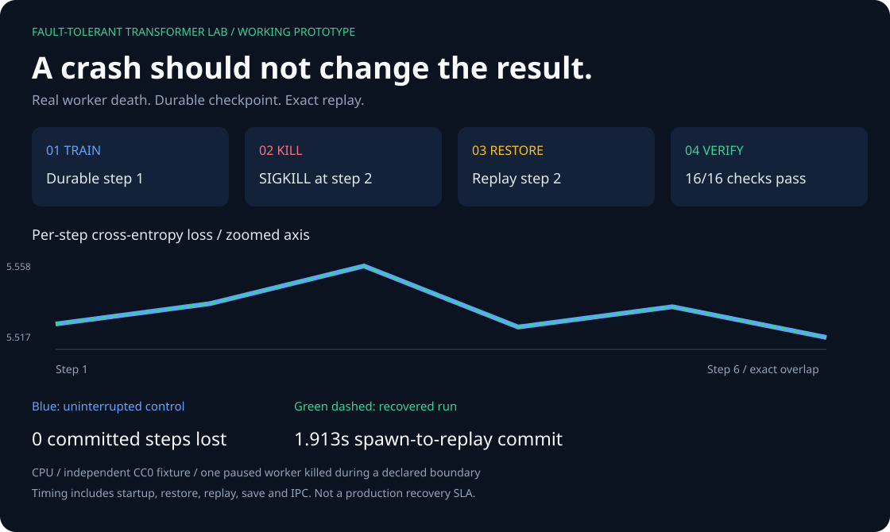

A real run, not a simulation
This page displays a completed experiment. It does not start training in your browser.
A parent sent SIGKILL to one independent CPU worker at
during-checkpoint-write. Fresh processes restored the checkpoint,
replayed the interrupted batch and matched an independent control.
Verified: 2026-10-04T20:17:25.282077+00:00 · exit code:
-9 · 6 completed steps ·
96 committed tokens.
Inspect all 16 equality checks
- PASS batch id sequence
- PASS completed steps
- PASS cursor
- PASS final checkpoint state
- PASS final logits digest
- PASS final logits tensors
- PASS final state digest
- PASS loss sequence
- PASS model tensors
- PASS optimizer tensors
- PASS rng state
- PASS run contract
- PASS run fingerprint
- PASS sample id sequence
- PASS staging cleanup
- PASS token count
Final state digest: 87a43ddb9b0dc1875614fe3577d652e47280afd410f056c2daeefcc3c0e45ba4
Code revision: 9d5a901797825a9e1a3cf0a426e894874f3bec9a
Reproduce from the repository root
uv sync --frozen --extra test
uv run --frozen fttl-demo --output artifacts/my-demo-001
Open artifacts/my-demo-001/preview/index.html.
Use a new output directory for each run. Linux/macOS, Python 3.12; CPU only.
The six-document CC0 fixture is independently written, not actual PEP text.
What this does not prove
- This report proves recovery after one parent-controlled POSIX SIGKILL in this pinned CPU run.
- The boundary handshake pauses one worker; it does not sample arbitrary asynchronous kill times.
- The operating system and filesystem remain running; this is not a power-loss durability proof.
- It does not measure model quality, GPU behavior, distributed scale, or production readiness.
- Timing includes local process startup and IPC; it is not a benchmark or service-level objective.
- Checkpoint hashes detect corruption but do not authenticate attacker-controlled artifacts.